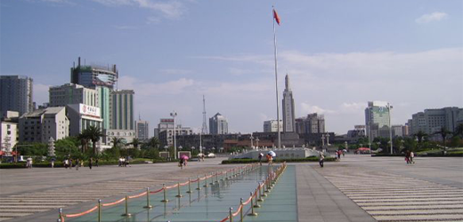

南昌八一广场
是南昌市和江西省政治、经济、文化等活动的重要场所，八一广场对于弘扬“八一”精神，进行革命传统和英雄主义教育，推动经济和社会的发展起到了重要作用。
Read More
八一南昌起义，常简称南昌起义或者八一起义，国民党称南昌暴动、南昌兵变，指1927年8月1日，中国江西南昌，由中国共产党势力的军队针对中国国民党的分共政策而发起的武装反抗事件。
由周恩来、谭平山、叶挺、朱德、刘伯承等中共人士和贺龙领导——贺龙在事件后加入中国共产党；领导人当中还有第20军的苏联军事顾问库马宁。
南昌起义是土地革命战争时期，继承孙中山的武昌革命起义，中共联合国民党左派，打响了武装反抗国民党反动派的第一枪，揭开了中国共产党独立领导武装斗争和创建革命军队的序幕；8月1日为中国人民解放军建军纪念日。